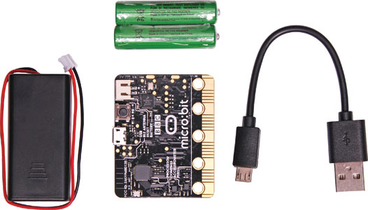

Indoor-outdoor thermometer
In the microbits, we are going to monitor the outdoor temperatures remotely. It will uses two microbits with different program where one will read and send the data whereas another will recieve and display the data.
Things you need before you started
- Two Micro:bit
- MakeCode online code editor
- Battery pack
- waterproof container

Logic:
- Outdoor micro:bit will use its temperature sensor to measure how hot or cold it is.
- It will uses radio to send the data to indoor micro bit.
>
- When the indoor micro:bit will receive the data , it will store the data in a variable called outdoorTemp.
- When you press input button A on the indoor micro:bit, it shows its own current tenoerature reading on its LED display output.
- when you press button B, it shows the temperature reading from outside that it has stored in the outdoorTemp variable
Steps
- Step 1: Open make code online editor i.e. https://python.microbit.org
- Step 2: Go to your Python editor.
- Step 3: Write the following code in the editor.
Code with Python
Outdoor sensor and transmitter
from microbit import *
import radio
radio.config(group=23)
radio.on()
while True:
radio.send(str(temperature()))
sleep(5000)
Indoor sensor and receiver
from microbit import *
import radio
radio.config(group=23)
radio.on()
outdoorTemp = '-'
while True:
message = radio.receive()
if message:
outdoorTemp = message
if button_a.was_pressed():
display.scroll(str(temperature()))
if button_b.was_pressed():
display.scroll(outdoorTemp)
Final things to do
Connect micro bit with the USB cable. Download/Flash the code into the microbit system. Hurray, we did it.
Challenges
- Send different messages and show different picture for alarm
- Make it more sensitive using alarm system